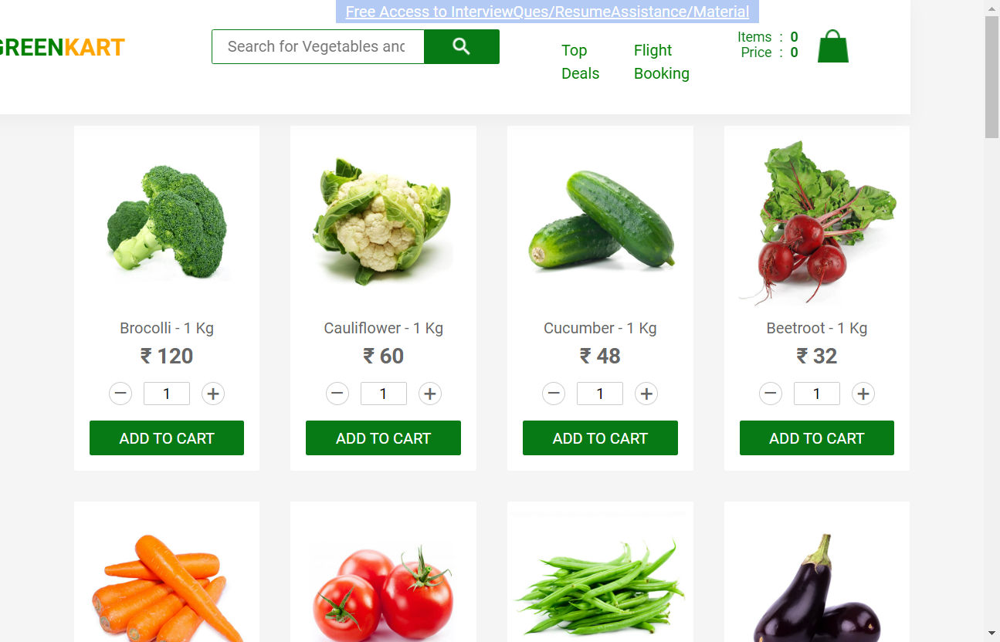
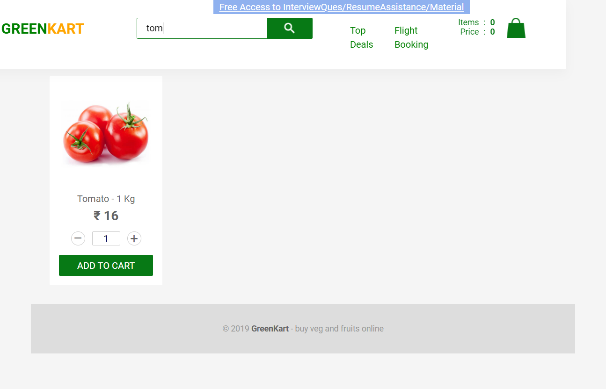
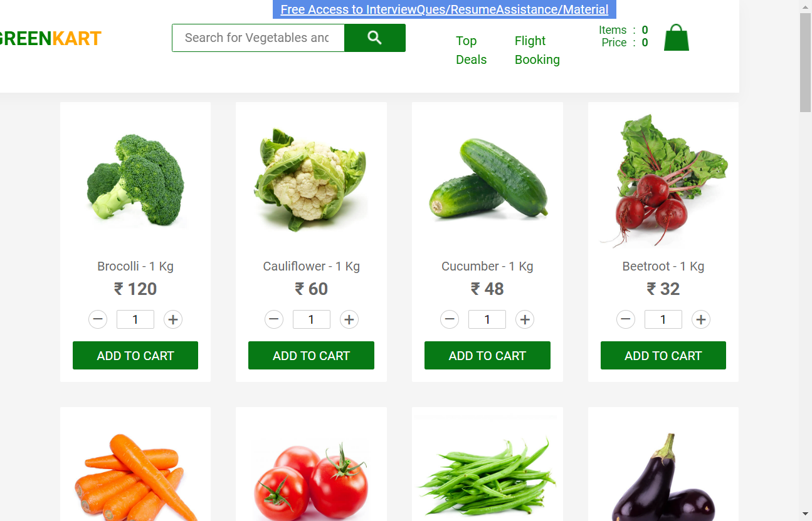
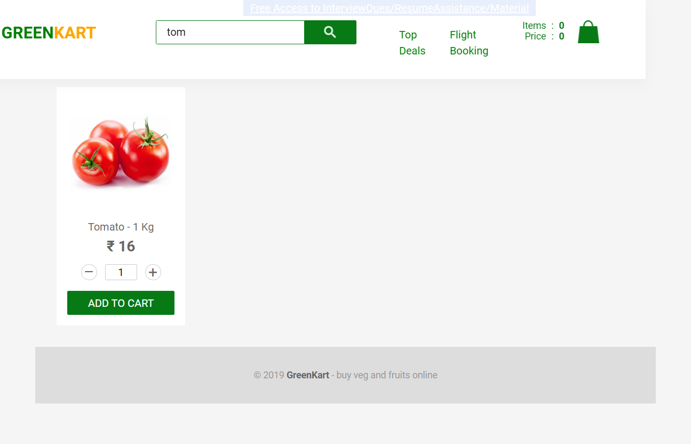
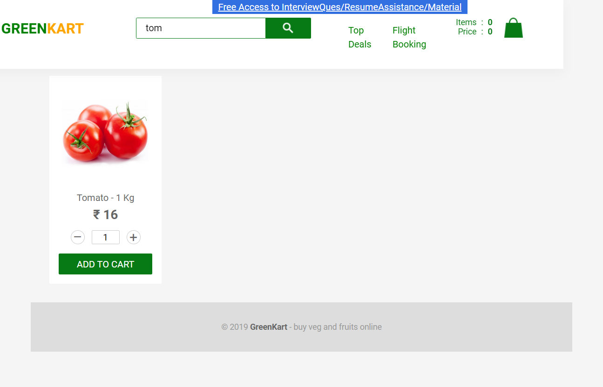
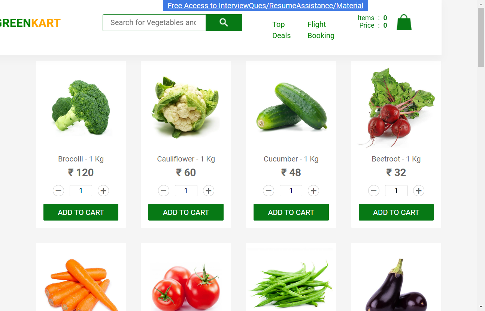
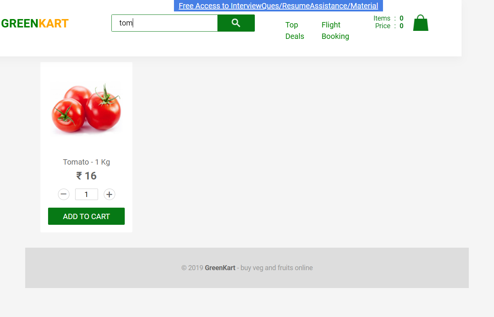

-
Search funationality
8:52:14 pm / 00:01:43:019 Fail
Search funationality
07.19.2022 8:52:14 pm 07.19.2022 8:53:57 pm 00:01:43:019 · #test-id=1FailSearch tomatoFailSearch tomatoGiven User launches "https://rahulshettyacademy.com/seleniumPractise"stepDef.Hooks.takeScreenshot(io.cucumber.java.Scenario)ScreenshotWhen user searches with "tom"stepDef.Hooks.takeScreenshot(io.cucumber.java.Scenario)ScreenshotThen user is displayed with "Tomato"stepDef.Hooks.takeScreenshot(io.cucumber.java.Scenario)PassSearch tomatoGiven User launches "https://rahulshettyacademy.com/seleniumPractise"stepDef.Hooks.takeScreenshot(io.cucumber.java.Scenario)ScreenshotWhen user searches with "tom"stepDef.Hooks.takeScreenshot(io.cucumber.java.Scenario)ScreenshotThen user is displayed with "Tomato"stepDef.Hooks.takeScreenshot(io.cucumber.java.Scenario)ScreenshotPassSearch tomatoGiven User launches "https://rahulshettyacademy.com/seleniumPractise"stepDef.Hooks.takeScreenshot(io.cucumber.java.Scenario)ScreenshotWhen user searches with "tom"stepDef.Hooks.takeScreenshot(io.cucumber.java.Scenario)ScreenshotThen user is displayed with "Tomato"stepDef.Hooks.takeScreenshot(io.cucumber.java.Scenario)Screenshot
-
org.openqa.selenium.remote.UnreachableBrowserException
1 tests
org.openqa.selenium.remote.UnreachableBrowserException
1 failedStatus Timestamp TestName Fail 20:52:25 pm stepDef.Hooks.takeScreenshot(io.cucumber.java.Scenario) Search funationality.Search tomato.stepDef.Hooks.takeScreenshot(io.cucumber.java.Scenario) -
org.openqa.selenium.NoSuchSessionException
1 tests
org.openqa.selenium.NoSuchSessionException
1 failedStatus Timestamp TestName Fail 20:52:24 pm Then user is displayed with "Tomato" Search funationality.Search tomato.Then user is displayed with "Tomato"
-
@Search
4 tests
@Search
2 passed 2 failedStatus Timestamp TestName Fail 20:52:14 pm Search tomato Search funationality.Search tomatoFail 20:52:14 pm Search tomato Search funationality.Search tomatoPass 20:52:14 pm Search tomato Search funationality.Search tomatoPass 20:52:14 pm Search tomato Search funationality.Search tomato
Started
Jul 19, 2022 08:52:13 pm
Ended
Jul 19, 2022 08:53:57 pm
Features Passed
0
Features Failed
1
Features
Scenarios
Steps
Timeline
Tags
| Name | Passed | Failed | Skipped | Others | Passed % |
|---|---|---|---|---|---|
| @Search | 2 | 2 | 0 | 0 | 50% |